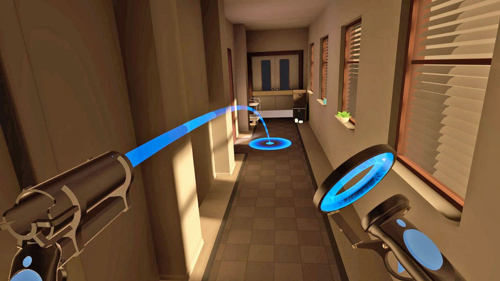

Navegación
La navegación es la facilidad con que el estudiante puede desplazarse o interactuar dentro del entorno de RM, ya sea a través de movimientos físicos, controles como joysticks o comandos de voz.
En la imagen se presenta una mecánica para desplazarse usando teletransportación hacia donde se señala con el laser. Esto puede evitar síntomas de mareo, pero también puede ser más difícil de controlar para usuarios novatos. Otras alternativas puede ser el desplazamiento caminando y usando la palanca de un joystick.